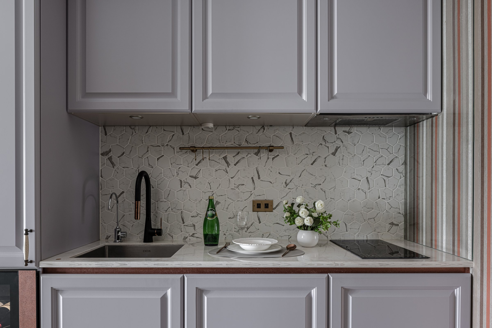
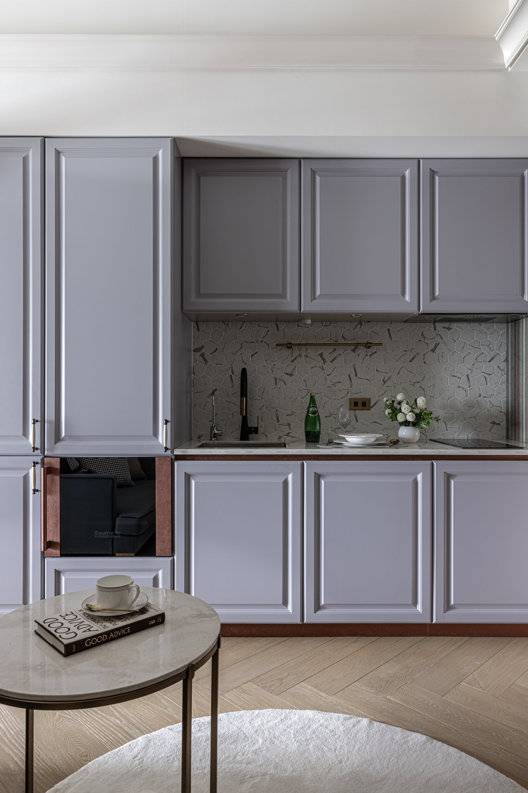
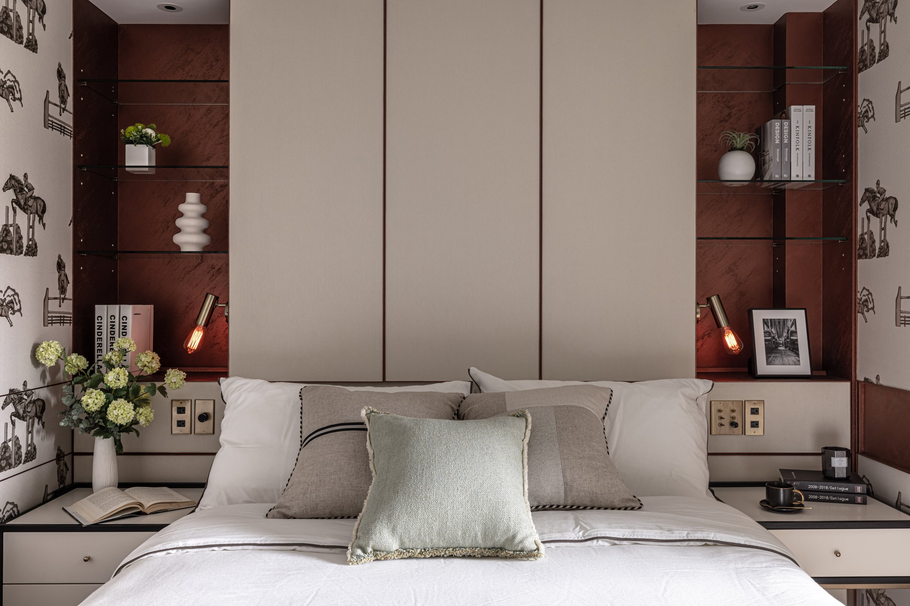

一個顏色被給的位置越少，就越響亮。
A colour speaks loudest when it is given the least room.

01
這個家的底色很安靜。奶油色的壁布，白色的線板，淺色人字拼的木地板，連看起來像灰的牆面都帶著一點暖。牆與櫃的彩度都壓得很低，沒有一面是真正中性的灰。
屋主想要的，是巴黎老公寓翻新之後的樣子。這是一棟新建築，這裡沒有任何東西被做舊，借走的只是那種比例。
This home is quiet at its base. Cream fabric on the walls, white mouldings, pale herringbone underfoot; even the surfaces that read as grey carry a little warmth. Every wall and cabinet sits at a very low saturation, and not one of them is a truly neutral grey.
The owner wanted the feeling of a Paris apartment after renovation. This is a new building, and nothing here was made to look old. What was borrowed was the proportion.


02
橘色在這裡，只有一條線的寬度。它走在櫃門的接縫裡，繞過鏡子的邊，沿著拱門的外框彎上去，見面只有零點五公分。
綠色留給浴室，而且綠到幾乎接近灰。兩個顏色本來互斥，這裡要的正是那個互斥，但衝突是被擺出來的，不是被喊出來的。大面積的顏色都壓得很低，只有金屬的線被容許深下去。
Orange is given the width of a single line. It runs in the joints between cabinet doors, turns around the edge of a mirror and climbs the frame of the arch, showing no more than half a centimetre.
Green is kept for the bathroom, and it is a green so muted it is nearly grey. The two colours pull against each other, and that tension is the point, but it is arranged rather than announced. Every large surface is held low; only the metal lines are allowed to go deep.


03
牆面不是整捲貼上去的。壁布依照我們給的尺寸逐片裁切、逐片平貼，床頭那面就切成三種寬度、兩種高度。接縫落在哪裡，鐵件的收邊就落在哪裡。巴黎護牆板的節奏，是這樣一片一片排出來的。
廚具是淡紫灰的古典門板，檯面與踢腳各收一道鏽橘。同一套收邊從客廳走進廚房，材料換了，線沒有換。
The walls were not papered from the roll. Each panel of fabric was cut to a size we set and laid flat, one at a time; the wall behind the bed alone is divided into three widths and two heights. Wherever a joint falls, the metal trim falls with it. The rhythm of Parisian panelling was built this way, piece by piece.
The kitchen is fronted in lilac-grey panelled doors, with a line of rust at the counter and at the plinth. The same trim runs from the living room into the kitchen: the material changes, the line does not.

04
臥室的兩面牆是騎馬圖案的壁紙。同一款圖案有橘色底的版本，最後選了米白底，把橘色留給線。
床頭兩側各嵌一個深赭紅的壁龕，黑色的薄玻璃層板，一盞暖黃的小燈。臥室裡最深的顏色，被收在這兩個壁龕的深度裡。
Two walls of the bedroom carry an equestrian print. The same pattern exists on an orange ground; the cream was chosen instead, and the orange was left to the lines.
Either side of the bed is a recess lined in deep oxblood, with thin black glass shelves and a small warm lamp. The deepest colour in the room is held within the depth of those two recesses.

05
真正花力氣的地方在頭頂。樓高三百五十公分，主樑一壓下來只剩兩百六。照一般做法順著樑把天花封平，高度就沒了。
廚具上方是一條真樑，我們在對面補了一條一樣大的假樑，空調主機與風管全部收進去，兩邊左右對齊，中間的天花回到三百。假樑裡只容得下一支管，所以主幹不走軟管，改走硬管。軟管內壁是皺褶，要送同樣的風量就得變粗，假樑跟著放大，兩邊便對不齊。硬管每一段都要現場丈量、訂製、包上保溫，換來的是一條細長的出風口，從客廳一路走到床頭。
房間與客廳之間的牆停在兩百四十，上方留空，讓天花從牆上穿過去。一道不碰天花的牆立不住，牆體裡埋了一支很薄的鐵件讓它自立，拉門的軌道也架在同一支鐵件上。
The real effort was spent overhead. The floor-to-floor height is 350 centimetres, but beneath the main beam only 260 remain. Follow the usual practice, seal the ceiling flat under the beam, and the height is gone.
Above the kitchen runs a real beam. Opposite it we built a false one of the same size, housed the air handling unit and all the ductwork inside, and aligned the two, left and right, so the ceiling between them could return to 300. The false beam has room for a single duct, so the trunk is rigid rather than flexible. A flexible duct is corrugated inside; to carry the same air it has to grow, the false beam grows with it, and the two sides no longer match. Every rigid section was measured on site, fabricated and wrapped in insulation, and what it bought is one long, slender supply slot running from the living room to the head of the bed.
The wall between bedroom and living room stops at 240 and leaves the space above it open, so the ceiling passes over. A wall that does not reach the ceiling cannot stand by itself: a thin steel member is buried inside to hold it upright, and the track of the sliding door rests on that same member.


06
浴室的牆與地坪都是霧面的特殊漆，帶著礦物般的質地。牆面上下兩色，淺的在上，深的在下，交界壓一條細金屬條把它們斷開。
白天，光從木百葉之間進來，被切成一條一條。浴櫃底下留了一道暖光，落在綠色的地坪上。
Walls and floor in the bathroom are a matte mineral plaster. Each wall is divided into two tones, pale above and dark below, with a fine metal strip at the line between them.
By day the light comes through wooden blinds in bands. Beneath the vanity a strip of warm light falls across the green floor.


All Photos